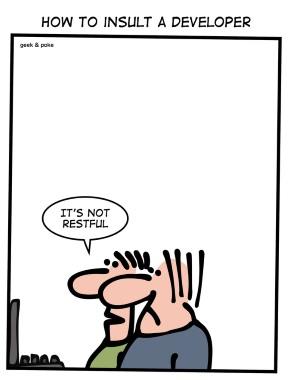
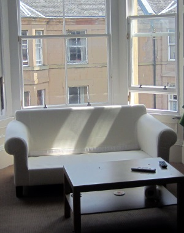
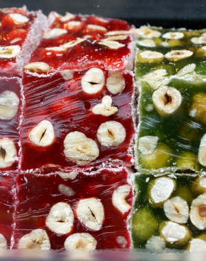
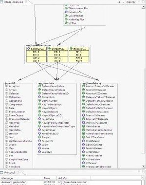
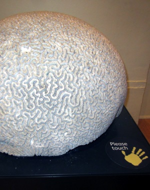

Copyright© 2010-2019 Kapelonis Kostis
Code Pipes
My presentations in companies, conferences and events
Technical Writing
Presentations
Code
Blog
Contact
All presentantions are offered in PDF format
Spock vs JUnit(JHUG 2016)
Your service is not REST (DevIt 2015)
Package by Feature revised (Oracle Java day 2014)
Nexus repository management (Trasys 2014)

Rest error handling (Trasys 2013)
Open Source vs Enterprise (Trasys 2013)

Software quality metrics (JHUG 2012)
Intro to software quality (JHUG 2102)
The Golden Rule of code comments (JHUG 2011)

Package by feature (JHUG 2010)

Quality Metrics (Trasys 2010)

Intro to Maven (Trasys 2010)
Profiling Java (Agilis 2008)
Ajax Evaluation (Agilis 2007)